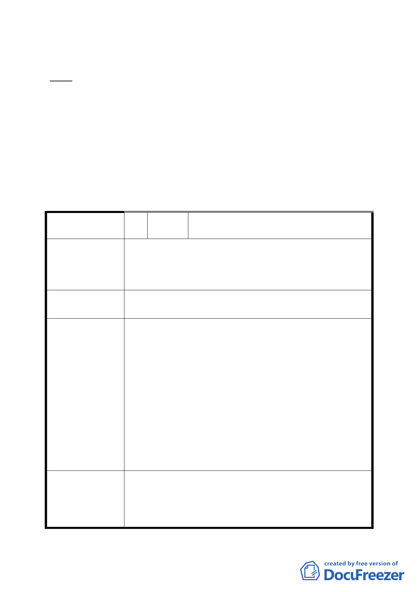

八、 公民或團體所提意見：1 件。(詳後附公民或團體意見表)
決議：
一、 本案除同意納入變更範圍外之南港區新光段一小段 137-3 地號
併同變更機關指定用途為供中央政府機關使用外，其餘依申請
單位、市府所送計畫書圖及會議當日所送補充會議資料內容修
正通過。
二、 公民或團體陳情意見審決如後附綜理表。
變更臺北市南港區新光段 1 小段 119 地號等 4 筆土地農業區為機關
用地(供中央政府機關使用)主要計畫案
臺北市都市計畫委員會公民或團體所提意見綜理表
編
號１
陳情人
國防部軍備局工程營產中心北部地區工程
營產處
案內同段 137 地號部分土地目前仍有軍事設施供第 202 廠
陳
情
理
由
「光華營區」使用中，因營區目前無搬遷計畫，請於變更
都市計畫內澄清註明，機關用地應包含可供國防事業使
用，避免因使用分區變更後無法供第 202 廠使用。
建 議 辦 法 請於變更都市計畫內澄清註明，機關用地應包含可供國防
事業使用，避免因使用分區變更後無法供第 202 廠使用。
申請單位(衛生署)回應：
1. 台北市南港區新光段一小段 137 地號為本署經管之土
地且為未來本署生技大樓預定興建基地範圍，本署仍
有公務需用，確實無法供 202 廠使用。
2. 202 廠之設施(開標室)興建於其他機關經管之土地
擬建議處理意見
上，應先釐清該廠當初為何會佔用他機關之土地？宜
先查明計算該開標室周圍目前國防部經管土地使用之
興建使用率。開標室周圍尚有大範圍自有土地，而僅
係佔用他機關小部份之土地時，其陳情理由之正當
性，尚有斟酌之空間。
3. 綜上 137 地號土地本署確實仍有公務需用，是請 202
廠仍宜遵循國有財產法相關規定辦理後續事宜。
案內南港區新光段一小段 137 地號同意由農業區變更為機
委員會決議
關用地（供中央政府機關使用），有關國防部軍備局工程
營產中心北部地區工程營產處陳情理由與建議事項，後續
由中央政府機關使用需求機關予以協調之。
- 16 -